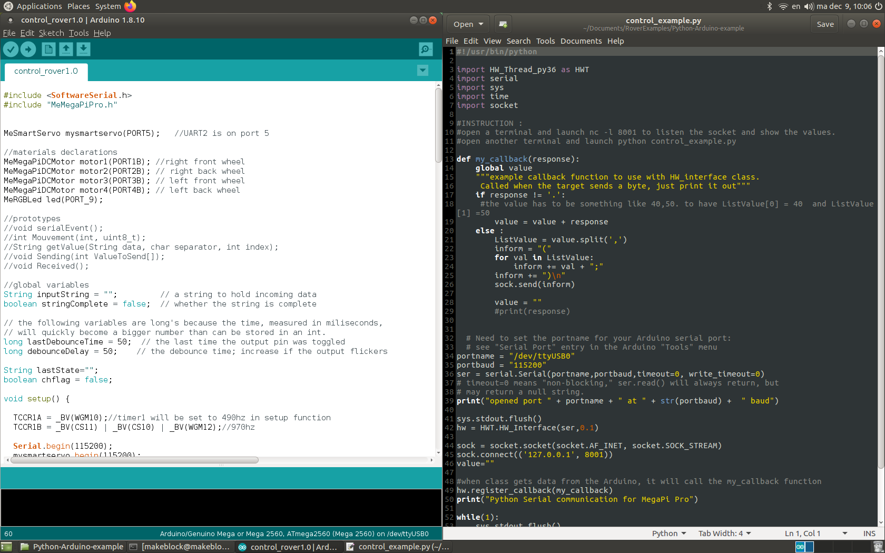
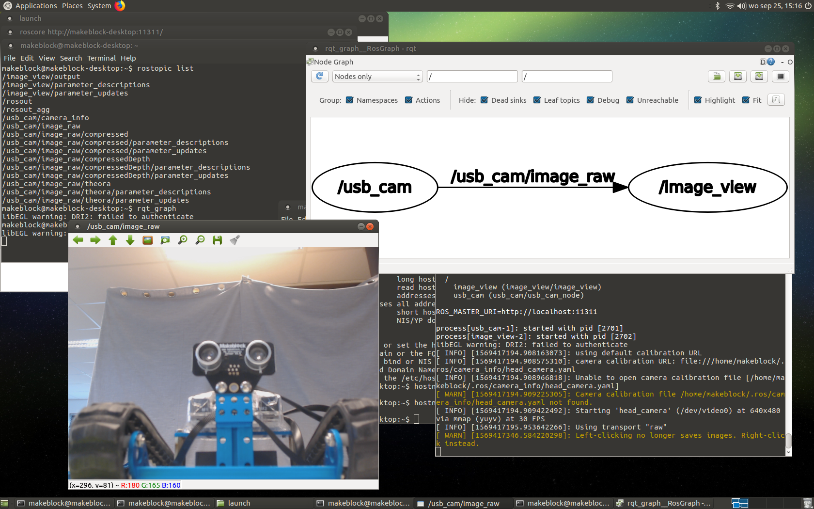
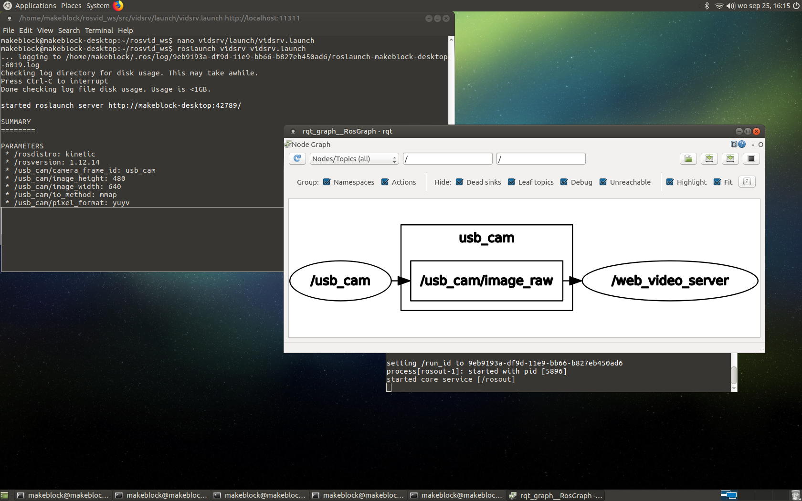

Examples¶
Somes examples have been done to help you to start with Raspberry Pi, Ubuntu, OpenCV, ROS and Kinect360 with Makeblock boards.
First try¶
To launch the examples, follow this method :
press CTRL+ALT+T to open a terminal, press enter to launch a command.
The different example send the information/state of the robot by sockets. So before to launch an example you have to launch a terminal to listen the port by writing :
TERMINAL 1:
nc -l 8001
or for the Mouvement_tkinter_gui example:
nc -l 8002
then press CTRL+ALT+T to open another terminal TERMINAL 2 : write (don’t forget to use tab for autocompletion):
cd Documents/RoverExamples/
ls
Like this you can see all the examples coded for the Rover. Continue by writing:
source ~/.profile
workon cv
cd Mouvement_tkinter_gui
python Mouvement_tkinter_gui.py
Each time you close the program, you have to listen the port again (nc -l 8001).
You can see and edit the code by using gedit (as example):
(cv) makeblock@makeblock-deskop:~/Documents/RoverExamples/ObjectLedDetection$ gedit Object_LED_detection_coordonates.py
Examples¶
CameraTesting¶
Go to /Documents/RoverExamples/CameraTesting and launch:
python camera_testing.py
to see and edit the code:
gedit camera_testing.py
Python-Arduino-example¶
This is one of the main example because it shows a simple communication between RPI and microcontroler.
Basically, the python code is used to send a String to the Arduino code and when the Arduino code receives this String it translates the content to execute commands.
For example, you can write S,1,50,50. to turn the Servo 1 at 50 degrees with a speed of 50 (the point . is to indicate to python code the end of the command)
Here is the list of commands already set, but of course you will need to modify the arduino code to implement new commands depending of your needs.
Commands |
Description |
|---|---|
S,1,50,50. |
column 2 |
S,2,50,50. |
column 2 |
L,1,255,255,255. |
column 2 |
F,50. |
column 2 |
B,50. |
column 2 |
R,50. |
column 2 |
L,50. |
column 2 |
column 2 |
ObjectLedDetection¶
OpenCV example. Can returns the coordinate of an object by recognising the color of this object (Yellow in the example).
Also, when this object is detected the LED switch on. To change the color and to purpose that the recognition adapt well to your object,
you should take a picture of your object and launch color_detection.py with the good path of your file (As you can see bellow, change yellow_object.JPG )
That will returns the HSV values that you need to write in the ObjectLedDetection.py file. the OpenCV example are based on this tutorial from Mjrovai.

ObjectTracking¶
OpenCV example. Improving of ObjectLedDetection project. Using OpenCV, the tilt/pan camera mechanism follows the yellow ball and the LED switches on when an object is detected.
Kinect360_projects¶
Simple 3D view of the space using Kinect360 camera. For complex applications (such as visual odometry for navigation with Rviz) you will need to use Rviz, ROS… on your computer.

ROS examples¶
Purpose to work with ROS Kinetic and packages to create a camera usb web server.
 